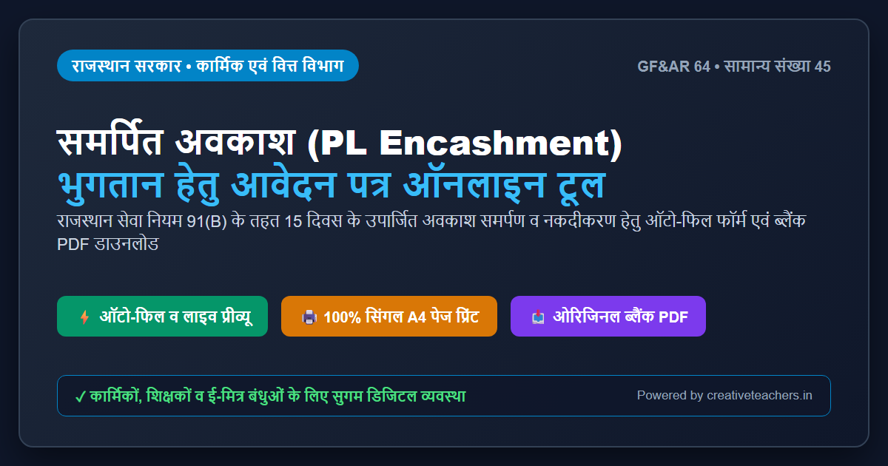
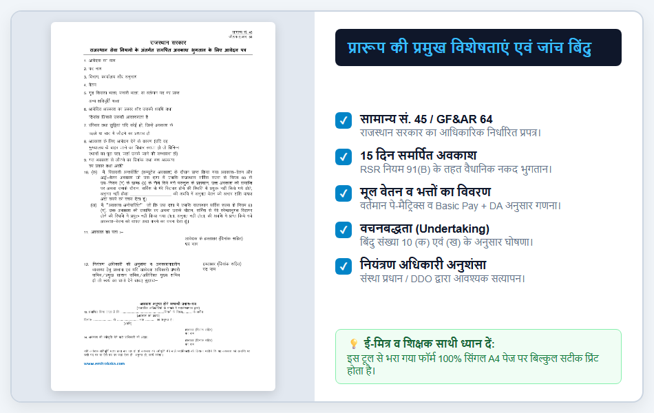
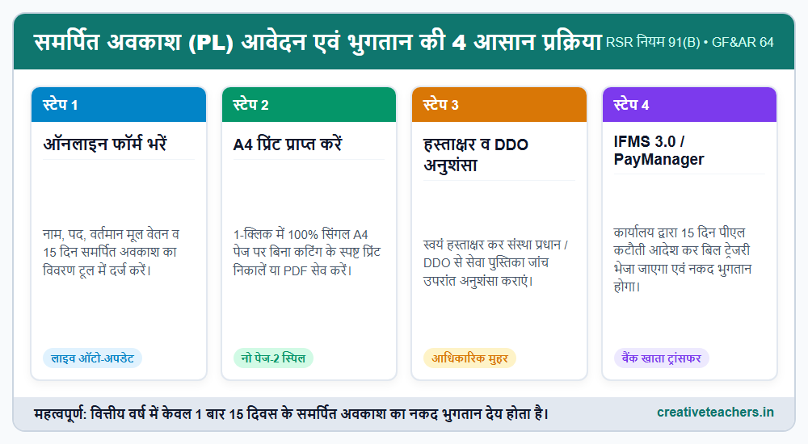
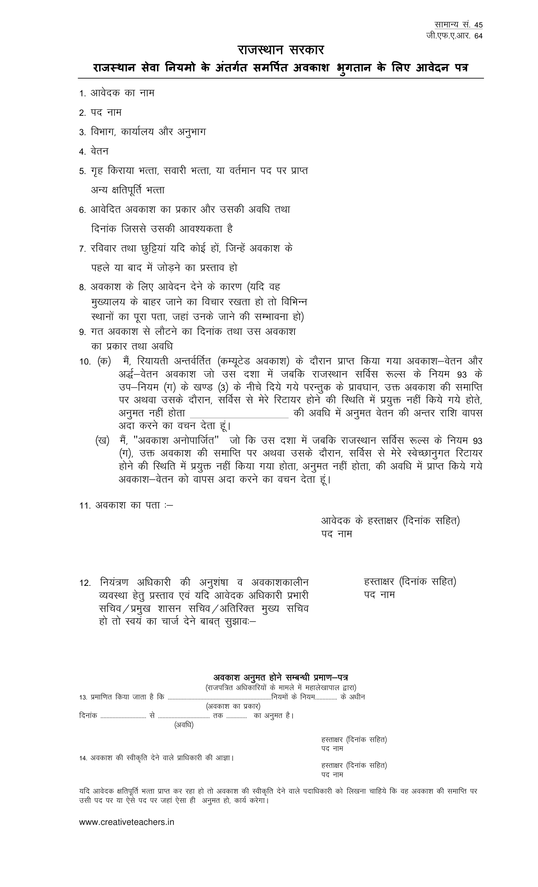

राम-राम शिक्षक साथियों एवं कार्मिक बंधुओं,
राजस्थान सरकार के अधीन कार्यरत सभी नियमित राजकीय कर्मचारियों, शिक्षकों एवं कार्मिकों को राजस्थान सेवा नियम (RSR) के नियम 91(B) के अनुसार प्रत्येक वित्तीय वर्ष (1 अप्रैल से 31 मार्च) में 15 दिवस के समर्पित अवकाश (Surrender Leave / PL Encashment) के समर्पण एवं उसके बदले नकद वेतन भुगतान प्राप्त करने का वैधानिक अधिकार होता है।
लेकिन हमारे कई साथी और ई-मित्र संचालक अक्सर एक बड़ी परेशानी से जूझते हैं। बाज़ार में मिलने वाले फॉर्म या इंटरनेट से डाउनलोड किए गए पुराने प्रारूप प्रिंट करते ही 2 पेजों में फैल जाते हैं या उनकी टेबल कट जाती है। नतीजा यह होता है कि संस्था प्रधान या कोषालय (Treasury) द्वारा फॉर्म यह कहकर वापस लौटा दिया जाता है कि "हस्ताक्षर दूसरे पेज पर अकेले आ रहे हैं, सिंगल पेज में आवेदन प्रस्तुत करें।"
आपकी इसी समस्या का शत-प्रतिशत स्थायी समाधान करते हुए हमने राजस्थान सरकार के आधिकारिक प्रारूप (सामान्य संख्या 45 / GF&AR 64) के अनुसार यह 1-क्लिक ऑनलाइन फॉर्म फिलिंग टूल तैयार किया है। नीचे दिए गए टूल में अपना सामान्य विवरण भरें और तुरंत 100% सिंगल पेज A4 प्रिंट प्राप्त करें, या सीधे ओरिजिनल ब्लैंक PDF डाउनलोड करके हाथ से भरें!
यदि आप हाथ से भरकर जमा करना चाहते हैं, तो राजस्थान सरकार के सामान्य संख्या 45 / जी.एफ.ए.आर. 64 का यह मूल खाली प्रपत्र उच्च गुणवत्ता में डाउनलोड करें।

राजस्थान सेवा नियम 1951 के नियम 91(B) के अनुसार, राज्य कर्मचारियों को अपने खाते में संचित उपार्जित अवकाश (Privilege Leave) में से प्रति वित्तीय वर्ष अधिकतम 15 दिवस का अवकाश समर्पित करने की अनुमति दी जाती है।

आवेदन पत्र को भरते समय किसी भी बिंदु को खाली या अस्पष्ट न छोड़ें। नीचे प्रत्येक क्रम संख्या का सही ब्योरा दिया गया है:
| क्र. सं. | प्रारूप का विवरण (Field) | क्या और कैसे भरें (Filling Instructions) |
|---|---|---|
| 1 | आवेदक का नाम | सेवा पुस्तिका एवं पे-मैनेजर के अनुसार कर्मचारी का पूरा नाम लिखें। |
| 2 | पद नाम | वर्तमान पद (जैसे- वरिष्ठ अध्यापक, अध्यापक L-2, कनिष्ठ सहायक आदि)। |
| 3 | विभाग, कार्यालय और अनुभाग | वर्तमान पदस्थापन विद्यालय/कार्यालय का पूरा नाम एवं विभाग का नाम लिखें। |
| 4 | वेतन | वर्तमान मूल वेतन (Basic Pay) और पे-मैट्रिक्स लेवल (जैसे- ₹ 42,300/- L-11)। |
| 5 | गृह किराया भत्ता व अन्य क्षतिपूर्ति भत्ता | नियमानुसार देय HRA (9% या 18%) अथवा "नियमानुसार देय भत्ते" लिखें। |
| 6 | आवेदित अवकाश का प्रकार, अवधि व दिनांक | लिखें: "समर्पित अवकाश - 15 दिवस, दिनांक 01.04.2026 से" (या जिस तिथि से चाहा गया हो)। |
| 7 | रविवार तथा छुट्टियां जोड़ने का प्रस्ताव | चूँकि यह नकद भुगतान हेतु समर्पण है, अतः यहाँ "लागू नहीं / शून्य" लिखें। |
| 8 | अवकाश आवेदन का कारण | लिखें: "नियम 91(B) के तहत वित्तीय वर्ष के 15 दिवस समर्पित अवकाश समर्पण एवं नकद भुगतान बाबत।" |
| 9 | गत अवकाश से लौटने का दिनांक व प्रकार | पिछले वित्तीय वर्ष में लिए गए समर्पित अवकाश का विवरण दर्ज करें। |
| 10 | वचनबद्धता (Undertaking क व ख) | यह सरकारी नियमों के तहत अनिवार्य घोषणा है। खाली जगह में "समर्पित अवकाश" अंकित रहता है। |
| 11 | अवकाश का पता एवं हस्ताक्षर | कर्मचारी का स्थायी निवास पता। दाईं ओर कर्मचारी अपने हस्ताक्षर करेंगे व पद लिखेंगे। |
| 12 | नियंत्रण अधिकारी की अनुशंसा | संस्था प्रधान / DDO द्वारा अवकाश समर्पण की अनुशंसा की जाएगी तथा हस्ताक्षर व मुहर लगाई जाएगी। |
| 13 | अवकाश अनुमत होने सम्बन्धी प्रमाण-पत्र | सेवा पुस्तिका जांच उपरांत कार्यालय द्वारा प्रमाणित किया जाता है कि नियम 91-B के तहत 15 दिन अनुमत है। |
| 14 | सक्षम प्राधिकारी की स्वीकृति आज्ञा | स्वीकृति देने वाले सक्षम अधिकारी (कार्यालय अध्यक्ष / DDO) द्वारा औपचारिक स्वीकृति आदेश व हस्ताक्षर। |

उत्तर: समर्पित अवकाश (15 दिन पीएल) के भुगतान में केवल मूल वेतन (Basic Pay) और उस पर देय महंगाई भत्ता (DA) ही मिलता है। इसमें मकान किराया भत्ता (HRA) अथवा अन्य कोई क्षतिपूर्ति भत्ता नहीं जोड़ा जाता।
उत्तर: जी नहीं। राजस्थान सेवा नियम 91B के तहत वित्तीय वर्ष में नकद भुगतान हेतु ठीक 15 दिन का ही अवकाश समर्पित किया जा सकता है। न इससे कम और न इससे अधिक।
उत्तर: यह भरा हुआ फॉर्म अपने विद्यालय/कार्यालय में DDO को प्रस्तुत करें। कार्यालय द्वारा सेवा पुस्तिका में 15 पीएल की कटौती दर्ज की जाएगी और कार्यालय आदेश जारी होगा। इसके पश्चात पे-मैनेजर / IFMS 3.0 पर Leave Encashment (Surrender) Bill बनाकर ट्रेजरी फॉरवर्ड किया जाएगा। ट्रेजरी से पास होते ही राशि आपके बैंक खाते में जमा हो जाएगी।
उत्तर: बिल्कुल 100% मान्य है। यह प्रारूप राजस्थान सरकार के वित्त विभाग द्वारा निर्धारित आधिकारिक सामान्य संख्या 45 / जी.एफ.ए.आर. 64 का ही डिजिटल रूप है। शिक्षा विभाग, चिकित्सा विभाग, पुलिस, राजस्व, पंचायती राज सहित राजस्थान सरकार के सभी विभागों और ई-मित्र केंद्रों पर यह पूर्णतः मान्य है।
ताकि किसी भी साथी को बाज़ार से फॉर्म खरीदने या खराब प्रिंटिंग के कारण परेशानी न उठानी पड़े।